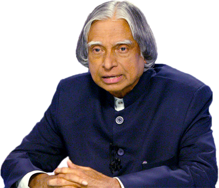

A.P.J Abdul Kalam
1931-2015
Missile Man Of India
APJ Abdul Kalam was born into a poor Tamil Muslim family in the pilgrimage town of Rameswaram, Tamil Nadu, on October 15, 1931. His mother, Ashiamma, was a housewife and his father, Jainulabdeen, was an imam of a local mosque and a boat owner. He was the youngest in the family with four elder brothers and a sister.Though, the family was not financially affluent yet all the children were raised in an atmosphere that was full of love and compassion.In order to add to the family’s income, Kalam had to sell newspapers during his early years.He was an average student during his school, but possessed a strong desire to learn and was very hard working. He loved mathematics and spent hours studying the subject. He pursued his education from ‘Schwartz Higher Secondary School,’ and then graduated from ‘Saint Joseph’s College, Tiruchirappalli,’ in 1954.He wanted to become a fighter pilot but his dream could not be fulfilled as here were only eight positions available in the IAF and he secured the ninth place.